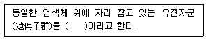

종자산업기사 (2003-08-10 기출문제)
1과목: 종자생산학 및 종자법규
1. 다음 채소종자 중 수명이 가장 짧은 것은?
- 호박종자
- 토마토종자
- 양파종자
- 무종자
(정답률: 알수없음)

2. 농업상으로는 종자이고 식물학상으로는 과실(果實)에 해당하는 것은?
- 당근과 시금치종자
- 고추와 참깨종자
- 오이와 수박종자
- 무와 배추종자
(정답률: 알수없음)
3. 종자산업법상의 벌칙 중 가장 중벌(重罰)은?
- 보증서를 허위로 발급한 종자관리사
- 종자업을 등록하지 아니하고 종자업을 영위한 자
- 신고하지 아니하고 품종의 종자를 생산 또는 수입하여 판매한 자
- 보호품종임을 허위로 표시한 자
(정답률: 알수없음)
4. 종자의 순도검사를 통하여 알 수 있는 것은?
- 종자표본의 발아능력
- 종자표본의 수분함량
- 종자표본의 병해 정도
- 고유 특성을 가진 종자비율
(정답률: 알수없음)
5. "국가품종목록"에 대한 설명 중 옳지 않은 것은?
- 벼, 보리 등 주요 농작물 종자가 등재 대상이다.
- 품종목록 등재품종의 종자생산은 종자업자가 할 수 있다.
- 등재대상작물의 종자는 국가품종목록에 등재하는 경우에 판매· 보급할 수 있다.
- 품종목록 등재신청이 있을 경우 농림부장관은 지체없이 등재하여야 하며, 이를 거절할 수 없다.
(정답률: 알수없음)
6. 다음 중 정립이 아닌 것은?
- 미숙립
- 주름진 립
- 원래 크기의 1/2이상인 종자 쇄립
- 이종종자
(정답률: 50%)
7. 우리나라에 사과 품종을 출원한 경우에 다음 중 신규성을 갖춘 것으로 인정받을 수 있는 것은?
- 품종보호출원일이전에 일본에서 종자가 6년이상 상업적인 이용을 목적으로 양도된 경우
- 품종보호출원일이전에 일본에서 종자가 6년이상 상업적인 목적으로 양도되지 않은 경우
- 품종보호출원일이전에 일본에서 종자가 10년이상 상업적인 목적으로 양도된 경우
- 품종보호출원일이전에 일본에서 종자가 10년이상 비상업적인 이용을 목적으로 양도된 경우
(정답률: 알수없음)
8. 채종재배에서 증식포장의 결정에 고려하여야 할 조건이 아닌 것은?
- 한 장소에서 전년도와 동일한 작물의 재배를 피한다.
- 작물을 베어 탈곡하기까지 쌓아 놓았던 포장을 피한다.
- 채종할 작물과 잡초의 성숙기가 같아서 함께 수확되는 경우는 피한다.
- 도시 근교는 피한다.
(정답률: 알수없음)
9. 다음 중 종자소독 약제로 널리 사용되는 것은?
- 베노람수화제(벤레이트티)
- 지베렐린수용제(지베렐린)
- 비티수화제(슈리사이드)
- 캪탄수화제(오소싸이트)
(정답률: 알수없음)
10. 대맥 및 과맥의 포장검사에서 특정병으로 취급하는 것은?
- 흰가루병
- 겉깜부기병
- 줄기녹병
- 붉은곰팡이병
(정답률: 80%)
11. 자연교잡에 의한 품종의 퇴화를 방지하기 위하여 채종포에서 봉지씌우기 등을 사용하여 자연교잡을 막는 방법을 무엇이라 하는가?
- 공간격리법
- 시간격리법
- 차단격리법
- 거리격리법
(정답률: 알수없음)
12. 종자의 씨눈(배)은 씨방(자방) 안의 어느 세포와 정(웅)핵이 융합하여 만들어 지는가?
- 난핵세포
- 극핵세포
- 조세포
- 반족세포
(정답률: 100%)
13. 자가불화합성을 이용하여 1대잡종 종자를 채종하는 작물이 아닌 것은?
- 무
- 배추
- 양배추
- 당근
(정답률: 알수없음)
14. 볍씨 200대(40kg들이) 소집단에서 채취하여야 할 1차 시료의 개수는?
- 매 포장에서 1개씩 200개
- 매 2대마다 1개씩 100개
- 총 50개 이상
- 총 30개 이상
(정답률: 알수없음)
15. 종피에 있는 것으로 동물의 배꼽과 같은 역할로 동화산물의 전류의 통로가 되는 것은 ？
- 제(hilum)
- 자엽(cotyledon)
- 하배축(hypocotyl)
- 유근(radicle)
(정답률: 알수없음)
16. 다음 중 종자전염병의 수확 전 방제에 있어서 주의해야 할 사항이 아닌 것은 ？
- 무병종자를 파종한다.
- 저항성 품종을 선택한다.
- 온탕처리를 한다.
- 윤작을 실시한다.
(정답률: 알수없음)
17. 발아시험에 사용되는 배지의 적정 pH는 얼마인가?
- pH 4.0 ∼ 6.0
- pH 6.0 ∼ 7.5
- pH 7.5 ∼ 9.0
- 특별한 기준이 없음.
(정답률: 알수없음)
18. 품종보호권의 효력이 미치는 것은?
- 보호품종으로부터 기본적으로 유래된 품종
- 영리 외의 목적으로 자가소비를 하기 위한 경우
- 실험 또는 연구를 하기 위한 경우
- 다른 품종을 육성하기 위한 경우
(정답률: 알수없음)
19. 다음에 열거한 작물 종자 가운데 종피의 특수기관인 제(臍, hilum)가 종자 뒷면에 있는 것은?
- 콩
- 배추
- 상추
- 쑥갓
(정답률: 알수없음)
20. 종자산업법에서 규정하고 있는 품종보호요건으로 맞는 것은?
- 영업성
- 진보성
- 적합성
- 균일성
(정답률: 알수없음)
2과목: 식물육종학
21. 난괴법 배치에 의하여 분산 분석을 할 때 F 값이 1보다 적을 때는?
- 유의성이 없다.
- 고도의 유의성이 인정됨으로 L.S.D 검정을 한다.
- 유의성은 인정되나 신뢰성이 매우 낮다.
- 1% 의 유의성이 인정된다.
(정답률: 알수없음)
22. 배추과 작물과 같이 타가수정을 원칙으로 하는 충매화의 경우 채종시 자연교잡에 의한 품종의 퇴화를 방지하기 위한 격리재배의 실용적인 안전거리는?
- 100 m 이상
- 1 km 정도
- 5 - 10 km 정도
- 10 km 이상
(정답률: 알수없음)
23. 여교잡법에서 특정 형질이 우성일 때 목적하는 형질을 가진 개체 선발은 언제하는가?
- 여교잡한 다음대 표현형에서 한다.
- 여교잡한 반복친에서 한다.
- 여교잡한 후 3회 자식을 시킨 후대에서 한다.
- 우량품종의 양친에 재차 여교잡한 후에 한다.
(정답률: 알수없음)
24. 다음 ( )안에 알맞는 용어는?

- 중복
- 배수성
- 연관군
- 다면발현
(정답률: 알수없음)
25. 과수 육종에 많이 이용되는 아조변이는 다음 중 어떤 변이에 속하는가?
- 방황변이
- 체세포 돌연변이
- 키메라 현상
- 색소체 돌연변이
(정답률: 알수없음)
26. 무성생식에 해당되지 않는 생식법은?
- 위수정
- 단위생식
- 영양생식
- 자가수정
(정답률: 알수없음)
27. 멘델이 완두콩의 교배 실험에서 유전법칙을 성공적으로 정립할 수 있었던 가장 중요한 요인은?
- 실험을 정밀하게 실시하였기 때문이다.
- 잡종개체를 숫자로서 구별 처리했기 때문이다.
- 여러차례 반복해서 실험하였기 때문이다.
- 통계분석 능력이 우수했기 때문이다.
(정답률: 알수없음)
28. 작물의 근계교배에 대한 설명으로 옳은 것은?
- 가장 극단적인 근친교배는 형매(兄妹)교배이다.
- 관계 유전자가 많을수록 호모(homo)정도가 빨라진다.
- 근교약세 현상은 혈연관계가 가까울수록 심하다.
- 근교약세 현상은 근친교배가 거듭 될수록 정도가 끝까지 심해진다.
(정답률: 알수없음)
29. 후대 검정에 대한 설명으로 옳은 것은?
- 이면 교잡을 시켜야 검정이 가능하다.
- 유전성 변이와 환경변이를 구분하는 검정이다.
- 일반조합 능력 검정을 위해서만 적용된다.
- 콜히친 처리를 하여야 검정이 가능하다.
(정답률: 70%)
30. 자가수분이 가장 용이하게 되는 경우는?
- 장벽수정인 경우
- 자웅예이장인 경우
- 자가불화합성인 경우
- 자웅동숙인 경우
(정답률: 알수없음)
31. 콜히친 처리를 하면 왜 염색체가 배가 되는가?
- 염색체가 2개로 종단되기 때문이다.
- 세포판이 생기기 때문이다.
- 방추사와 세포막의 형성을 억제하기 때문이다.
- 핵분열이 촉진되기 때문이다.
(정답률: 알수없음)
32. 다음 중 양파의 유전적 불임성에 속하는 것은?
- 자가 불화합성
- 세포질 유전자적 웅성불임성
- 세포질적 웅성불임성
- 이형예 불화합성
(정답률: 알수없음)
33. 조합능력의 검정법 중 특정조합능력만을 검정 할 수 있는 방법은?
- 단교잡
- 톱교잡
- 다교잡
- 이면교잡
(정답률: 알수없음)
34. 야생형이나 사용치 않는 재래종을 보존하는 가장 중요한 목적은 무엇인가?
- 품종의 변천사 교육
- 식물분류상의 이용
- 장래 육종 자료로 이용
- 자연상태의 돌연변이 연구
(정답률: 알수없음)
35. F1의 유전자형이 AaBb일 때 형성되는 배우자의 종류는?
- 2개
- 4개
- 6개
- 8개
(정답률: 알수없음)
36. 감자 종자의 퇴화 원인으로 가장 중요한 것은?
- 병리적 퇴화
- 자연교잡에 의한 퇴화
- 돌연변이에 의한 퇴화
- 근교약세에 의한 퇴화
(정답률: 알수없음)
37. 수분과다에 의한 스트레스에 저항성을 나타내는 현상은?
- 내건성
- 내한성
- 내습성
- 내비성
(정답률: 알수없음)
38. 다음 중 3염색체(tetrasomic)는?
- 2n+1
- 2n-1
- 2n+2
- 2n-2
(정답률: 알수없음)
39. 양적형질을 지배하는 요인과 거리가 먼 것은?
- 동의유전자(polymeric gene)
- 미동유전자(minor gene)
- 세포질유전자(plasma gene)
- 환경(environment)
(정답률: 알수없음)
40. 다음 중 돌연변이는?
- 교잡에 의한 유전자의 조환
- 3배체 수박의 작성
- 야생 약초의 작물로서 재배
- 춘화처리에 의한 개화촉진
(정답률: 알수없음)
3과목: 재배원론
41. 다음 작물 중 휴립 휴파법을 이용하여 재배하는 작물은 어느 것인가?
- 보리
- 고구마
- 감자
- 논벼
(정답률: 알수없음)
42. 도복 대책으로 적절하지 않는 것은?
- 밀식재배
- 내도복성 품종 선택
- 배토 후 답압
- 균형시비
(정답률: 알수없음)
43. 감온성과 감광성이 높은 벼품종을 저위도지역으로 옮길 경우 예상되는 현상은?
- 아무런 영향이 없다.
- 출수가 너무 지연된다.
- 출수가 조금 지연된다.
- 출수가 촉진된다.
(정답률: 알수없음)
44. 다음의 생리작용 중 광과 관련이 없는 것은?
- 굴광현상
- 광합성
- 전류
- 착색
(정답률: 알수없음)
45. 작물이 생육 도중에 각종 환경스트레스를 받았을 때 나타내는 반응과 거리가 먼 것은?
- 토양이 과습하면 흡수작용과 광합성 등이 저하된다.
- 특정유전자의 발현이 유도되어 체내물질대사에 변화가 일어난다.
- 병원균에 감염되면 2차대사물질이 많이 생성되는 것으로 알려져 있다.
- 저온 스트레스는 작물의 양분 흡수를 조장한다.
(정답률: 알수없음)
46. 오옥신의 재배적 이용으로 활용되지 않는 항목은?
- 착과증대
- 접목의 활착증진
- 개화촉진
- 발근억제
(정답률: 알수없음)
47. 연작 장해가 가장 적은 작물은?
- 인삼
- 쑥갓
- 수박
- 옥수수
(정답률: 알수없음)
48. 식물 지리적 미분법(Differential phyto-geographicmethod)에 대한 설명이 아닌 것은?
- Morgan에 의해서 제창되었다.
- 전세계를 통하여 농작물과 그들의 근연식물을 수집하여 조사하였다.
- 주요작물의 재배기원 중심지를 8개 지역으로 나누었다.
- 다양성에 주목을 하였다.
(정답률: 46%)
49. 작물의 개화를 유도하기 위해서 생육의 일정한 시기에 저온 처리를 하는 것을 무엇이라고 하는가?
- 온도처리
- 광주율
- 일장효과
- 춘화처리
(정답률: 알수없음)
50. 다음 작물 중 C4 식물에 해당되는 것은?
- 벼, 보리, 오차드그라스
- 벼, 피, 오차드그라스
- 보리, 옥수수, 해바라기
- 옥수수, 사탕수수, 피
(정답률: 알수없음)
51. 구미의 발달된 농업지대에서 주로 이루어지는 식량과 사료를 균형있게 생산하는 유축농업은 다음 재배 형식 중 어느 것인가?
- 곡경 (穀耕)
- 식경 (殖耕)
- 원경 (園耕)
- 포경 (圃耕)
(정답률: 알수없음)
52. 토양구조에서 작물생육에 유리한 것은 입단구조이다. 다음 중 입단구조를 파괴시키는 조건은?
- 유기물과 석회의 시용
- 콩과작물의 재배
- 입단의 수축과 팽창
- 토양개량제의 시용
(정답률: 90%)
53. 포도의 무핵과 생산에 가장 효과적으로 이용되고 있는 화학 물질은?
- NAA
- 2,4-D
- IBA
- Gibberellin
(정답률: 알수없음)
54. 플러그 육묘의 장점이 아닌 것은?
- 육묘의 노력절감
- 종자절약
- 추대조장
- 토지이용도 증대
(정답률: 알수없음)
55. 괴경으로 번식하는 작물은?
- 생강
- 마늘
- 감자
- 고구마
(정답률: 알수없음)
56. 다음 중 가장 낮은 농도에서 피해를 일으키는 대기오염 물질은?
- SO2
- HF
- PAN
- O3
(정답률: 알수없음)
57. 과실의 성숙을 촉진하는 대표적인 식물호르몬은?
- 오옥신(Auxin)
- 아브시스산(Abscisic acid)
- 사이토카이닌(Cytokinin)
- 에틸렌(Ethylene)
(정답률: 알수없음)
58. 작물의 다양성에 대해 옳게 설명한 것은?
- 작물의 분화 과정을 통하여 다양성이 감소한다.
- 작물의 기원중심지에는 다양성이 적다.
- 환경적 변이가 다양성의 원인이 된다.
- 새로운 품종 개발을 위한 재료로 이용된다.
(정답률: 알수없음)
59. 비료의 행동을 정확하게 추적할 수 있는 방사성동위 원소는?
- 11C,14C
- 60CO, 24Na
- 32P, 42K, 45Ca
- 137Cs, 35S
(정답률: 알수없음)
60. 답전윤환의 작부체계에서 논과 밭의 기간은 각각 어느 정도가 좋은가?
- 2 - 3 년
- 3 - 4 년
- 4 - 5 년
- 5 - 6 년
(정답률: 알수없음)
4과목: 식물보호학
61. 다음은 천적과 해충을 연결한 것이다. 틀린 것은?
- 칠레이리응애 - 점박이응애
- 무당벌레 - 진딧물
- 꽃등애 - 진딧물
- 파리매 - 끝동매미충
(정답률: 알수없음)
62. 밭에서 주로 많이 발생하는 잡초는?
- 올방개
- 명아주
- 사마귀풀
- 가래
(정답률: 알수없음)
63. 소화중독제는 해충의 어느 부위에서 주로 흡수되는가?
- 표피
- 전장
- 중장
- 후장
(정답률: 알수없음)
64. 복숭아혹진딧물에 대한 설명 중 틀린 것은?
- 각종 바이러스병 매개를 한다.
- 월동란에서 부화한 유충은 간모이다.
- 간모는 태생으로 단위 생식한다.
- 1년에 5회 발생한다.
(정답률: 알수없음)
65. 다음 병 중 세균병에 해당하는 것은?
- 벼흰잎마름병
- 배추 무사마귀병
- 오이류덩굴쪼김병
- 보리겉깜부기병
(정답률: 알수없음)
66. 곤충의 행동 중 개미가 위협을 받을시 분산, 공격적 행동을 유도하는데 다른 개체에 알리는 통신 물질은?
- 페로몬(pheromone)물질
- 시각에 의한 통신
- 청각 통신
- 접촉에 의한 통신
(정답률: 알수없음)
67. 다음 중에서 일생 동안을 지하에서 생활하는 곤충에 속하지 않는 것은?
- 반날개류
- 낫발이류
- 좀붙이류
- 땅강아지
(정답률: 알수없음)
68. 다음 중 잡초로 인한 피해와 거리가 먼 것은?
- 농작업시간을 지연시키고 수량 감소를 초래한다.
- 병해충의 매개원이 된다.
- 조류나 어패류의 서식지가 된다.
- 광· 수분 및 영양 등의 작물과의 경합으로 작물 생육에 지장을 초래한다.
(정답률: 알수없음)
69. 농약의 구비조건이 잘못된 것은?
- 효력이 정확할 것
- 물리적 성질이 양호할 것
- 다른 약제와 혼용 범위가 좁을 것
- 등록되어 있는 농약일 것
(정답률: 알수없음)
70. 작물의 피해 원인에는 생물적 요소와 비생물적 요인이 있다. 다음 중 비생물적 요인은?
- 배추 무름병에 의한 피해
- 응애에 의한 오이피해
- 철의 용탈에 의한 추락현상
- 벼 여뀌 잡초에 의한 피해
(정답률: 알수없음)
71. 냉수온탕침법에 의하여 종자소독이 불가능한 병원체는?
- 점균
- 바이러스
- 세균
- 진균
(정답률: 알수없음)
72. 다음 해충의 월동처와 월동태가 모두 맞는 것은?
- 담배나방의 월동처는 땅속이고 월동태는 번데기이다.
- 복숭아심식나방의 월동처는 나무껍질 속이고 월동태는 유충이다.
- 애멸구의 월동처는 제방의 잡초, 보리밭 등지이고, 월동태는 성충이다
- 벼잎벌레의 월동처는 논 부근의 숲이나 잡초사이이고 월동태는 알이다.
(정답률: 알수없음)
73. 최초로 합성된 페녹시(phenoxy)계 제초제는?
- 2,4-D
- 부타클로르(butachlor)
- 알라클로르(alachlor)
- 시마진(simazine)
(정답률: 알수없음)
74. 유효성분을 가스로 하여 해충을 방제하는데 쓰이는 약제는?
- 접촉제
- 침투성 살충제
- 훈증제
- 훈연제
(정답률: 알수없음)
75. 액제를 물에 희석하여 분무기로 살포할 때 물의 량을 적게하고 진한 약액을 미립자로 해서 살포하는 방법은?
- 분무법
- 살분법
- 미스트법
- 미량살포법
(정답률: 알수없음)
76. 토마토 배꼽썩음병은 식물 영양원 중 어떤 원소의 결핍으로 나타나는 병인가?
- Mg
- Ca
- K
- Mn
(정답률: 알수없음)
77. 거름기가 떨어진 벼에 많이 발생하는 병해는?
- 도열병
- 잎집무늬마름병 (문고병)
- 깨씨무늬병
- 이삭누룩병
(정답률: 알수없음)
78. 병원체의 작용을 억제하는 기주의 능력을 무엇이라고 하는가?
- 저항성
- 감수성
- 면역성
- 내병성
(정답률: 알수없음)
79. 지표식물이란 어떤 병에 감수성인 식물을 심어서 그 병원균의 존재유무를 알아보기 위한 방법으로 사용되는 식물이다. 어떤 진단법에 속하는가?
- 병징에 의한 진단법
- 생물학적 진단법
- 배양에 의한 진단법
- 이화학적 진단법
(정답률: 알수없음)
80. 다음 중 다년생 잡초는?
- 둑새풀
- 여뀌
- 생이가래
- 개구리밥
(정답률: 알수없음)